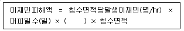
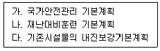
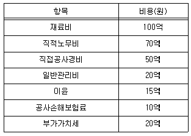
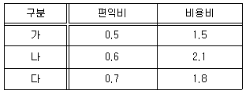
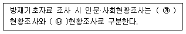
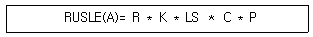
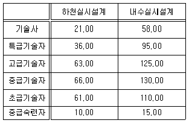
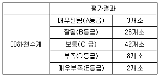
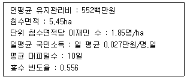
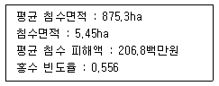

방재기사 (2019-11-02 기출문제)
1과목: 재난관리
1. 방재시설의 유지 및 관리 평가 항목 기준 및 평가방법 등에 관한 고시에 따른 방재시설의 유지 관리 평가대상 중 시설과 시설물이 올바르게 짝지어진 것은?
- 소하천시설 - 하수저수시설
- 공공하수도시설 - 호안
- 항만시설 - 사방시설
- 도로시설 - 토사유출, 낙석방지시설
(정답률: 알수없음)

2. 자연재해대책법령상 풍수해저감종합대책 수립 시 공간적 구분에 포함되지 않는 것은?
- 전지역단위
- 수계단위
- 위험지구단위
- 재해지구단위
(정답률: 알수없음)
3. 재난 및 안전관리기본법 시행규칙에 따른 응급조치에 사용할 장비 및 인력의 분야별 지정대상 및 관리기준으로 옮은 것은?
- 가스 : 최소 운영재고 17.6만 톤 이상의 안전재고 유지 및 중단 없는 공급을 위한 공급능력 유지
- 항만 : 컨테이너 야드 장치율 75% 미만으로 유지
- 식용수 : 정수장(광역) - 1일 식용수 공급량 50% 이상 공급능력유지
- 의료서비스 : 응급의료기능 100%유지
(정답률: 알수없음)
4. 다차원 홍수피해산정방법(MD-FDA)을 이용한 이재민 피해액 산정식에서 ( )에 알맞은 단어는?

- 주거지역 침수편입률
- 소비자물가지수
- 건축형태별 연면적비율
- 일평균 국민소득
(정답률: 알수없음)
5. 재난 및 안전관리 기본법상 재난수습활동 필요한 재난관리 자원의 비축 및 관리에 대한 설명으로 틀린 것은?
- 재난수습활동에 필요한 재난관리 자원은 재난관리 책임기관에서 비축·관리한다.
- 행안부장관, 시·도지사, 시장, 군수, 구청장은 재난발생에 대비하여 응급조치에 사용할 민간분야의 장비와 인력을 지정, 관리할 수 있다.
- 재난관리자원 공동 활용 시스템은 가급 재난관리책임기관의 장이 구축, 운영한다.
- 국가기반시설과 관련된 전기, 통신, 수도용기가재라도 재난관리자원 공동 활용 시스템구축대상에 속한다.
(정답률: 알수없음)
6. 재난 및 안전관리 기본법령상 재난피해 조사 및 복구계획에 대한 설명으로 틀린 것은?
- 재난으로 피해를 입은 사람은 피해상황을 행안부령으로 정하는 바에 따라 시장, 군수, 구청장에게 신고할 수 있다.
- 중앙대책본부장은 재난피해의 조사를 위하여 필요한 경우 대통령령으로 정하는 바에 따라 관계중앙행정기관 및 관계재난관리책임기관의 장과 합동으로 중앙 재난피해합동조사단을 편성하여 재난피해 상황을 조사할 수 있다.
- 재난관리책임기관의 장은 특별재난지역으로 선포된 지역의 사회재난으로 인한 피해에 대하여 재난피해 조사를 마치면 지체 없이 자체복구계획을 수립, 시행한다.
- 중앙대책본부장은 재난복구사업의 지도점검을 하려는 경우에는 지도점검 계획을 수립하여 5일전까지 대상기관에 통지해야한다.
(정답률: 알수없음)
7. 재난 및 안전관리 기본법령상 국가기반시설의 분류로 틀린 것은?
- 에너지 - 국외민간시설 - 원자력 - 정부주요시설
- 에너지 - 금융 - 원자력 - 식용수
- 교통수송 - 보건의료 - 원자력 - 환경
- 정보통신 - 금융 - 환경 - 교통수송
(정답률: 알수없음)
8. 재난 및 안전관리법령상 위기경보의 구분에 포함되지 않는 것은?
- 관심
- 주의
- 경계
- 경보
(정답률: 알수없음)
9. 재해구호법령상 구호에 대한 설명으로 옳은 것은?
- 구호기관은 타인소유 토지 또는 건물 등으로 구호활동을 할 수 없다.
- 장사의 지원에 재해로 사망한 사람의 연고자에게는 특별장례비 지급하지 않는다.
- 구호기관은 이재민에게 현금을 지급하여 구호할 수 있다.
- 구호기간은 이재민의 피해정도 및 생활정도 등을 고려하여 6개월 이내로 하며 그 기간을 연장할 수 없다.
(정답률: 알수없음)
10. 재난관리주관기관의 장은 재난이 발생하거나 발생할 우려가 있는 경우 재난상황을 효율적으로 관리 재난을 수습하기위하여 설치하는 기구의 명칭으로 옳은 것은?
- 중앙재난안전대책본부
- 통합지원본부
- 중앙사고수습본부
- 지역재난안전대책본부
(정답률: 알수없음)
11. 재난 및 안전관리 기본법령상 다음의 각항목별 수립주기로 옳은 것은? (문제 오류로 실제 시험에서는 모두 정답처리 되었습니다. 여기서는 1번을 누르면 정답 처리 됩니다.)

- 가 : 5년, 나 : 1년, 다 : 5년
- 가 : 5년, 나 : 1년, 다 : 3년
- 가 : 10년, 나 : 3년, 다 : 5년
- 가 : 10년, 나 : 3년, 다 : 3년
(정답률: 알수없음)
12. 재난 및 안전관리 기본법령상 재난의 대응 활동에 해당하는 것은?
- 긴급통신수단 확보
- 위기경보의 발령
- 안전점검
- 특별재난지역 선포
(정답률: 알수없음)
13. 밀도가 1030kg/m이고 체적탄성계수가 2.34GPa인 바닷물 속에서 음속은?
- 47.7
- 1066
- 1507
- 2131
(정답률: 알수없음)
14. 재난 및 안전관리 기본법령상 다중이용시설 등의 위기상황 매뉴얼에 따라 주기적 훈련의 의무를 가지는 사람은?
- 소유자, 관리자, 점유자
- 행정안전부장관
- 재난관리주관기관장
- 시장, 군수, 구청장
(정답률: 알수없음)
15. 2002년 태풍‘루사’가 한반도에 상류했던 때 강원도 심석천에 시간당 100mm의 집중호우가 발생했는데 심석천의 면적은 36km이고 유출계수는 0.4라고 가정할 때 합리식에 따른 유역출구에서의 첨두유량은 얼마인가?
- 100
- 200
- 300
- 400
(정답률: 알수없음)
16. 재난 및 안전관리 기본법령상 재난 및 사고유형별 재난관리주관기관 중 식용수(지방상수도포함) 사고를 주관하는 기관은?
- 국토교통부
- 환경부
- 보건복지부
- 행정안전부
(정답률: 알수없음)
17. 지진 등으로 인해 암반사면파괴가 발생할 때 거동양상으로 틀린 것은?
- 원호파괴
- 평면파괴
- 말뚝파괴
- 전도파괴
(정답률: 알수없음)
18. 재난 및 안전관리 기본법령상 국가안전관리기본계획을 작성할 책임을 가진 자는?
- 대통령
- 국무총리
- 행정안전부장관
- 재난관리책임기관 장
(정답률: 알수없음)
19. 중앙재난안전대책본부 구성 및 운영에 관한 규정에 따라 상황판단회의에서 판단하는 사항으로 틀린 것은?
- 재난사태 선포 필요성여부
- 재난관리책임기관의 협력에 관한 사항
- 지역안전문화 활성화에 관한사항
- 재난관리책임기관 직원의 파견범위
(정답률: 알수없음)
20. 주민대피계획 수립 및 유도방안에 대한 설명으로 옳은 것은?
- 특별재난지역이 선포되면 위험구역설정과 대피명령 해당지역 여행 등 이동자제 권고 대상이 된다
- 재난관리 기금으로 강제대피명령 또는 퇴거명령을 이행하는 주민에게 임대주택 이주지원은 가능하나 주택임차비용 지원은 불가하다.
- 사람생명 또는 신체대한 위해방지를 위해 사람과 선박, 자동차 등의 대피명령권한은 지역통제단장의 고유 권한이다.
- 시·도 및 시·군·구 재난 예보·경보체계 구축사업 시행계획에 대피계획 등과 연계한 재해예방활동을 반영해야한다.
(정답률: 알수없음)
2과목: 방재시설
21. A공사의 사업비가 다음 표와 같을 때 계약예규에 따른 직접공사비에 포함되는 항목만을 더한 값은 얼마인가? (단, 제시된 비용회에는 무시한다.)

- 220억원
- 240억원
- 255억원
- 285억원
(정답률: 알수없음)
22. 자연재해대책법령상 내풍설계기준 설정대상시설 아닌 것은?
- 하수도법에 따른 하수도 관로시설
- 건축법에 따른 건축물
- 관광진흥법에 따른 유원시설 상의 안전성검사 대상 유기기구
- 도시철도법에 따른 도시철도
(정답률: 알수없음)
23. 치수개선사업대상지 가, 나, 다 3개 지구의 우선순위 결정을 위한 편익-비용비(B/C) 산정결과 다음과 같을 때 경제성순위로 옳은 것은?

- 가 > 나 > 다
- 나 > 다 > 가
- 다 > 가 > 나
- 가 > 다 > 나
(정답률: 알수없음)
24. 재해복구사업의 효과성, 경제성을 평가하는 경우 포함해야하는 사항이 아닌 것은?
- 지역경제의발전성
- 신기술의적용성
- 지역주민생활환경쾌적성
- 재해저감성
(정답률: 알수없음)
25. 우수유출저감시설이 아닌 것은?
- 침투트렌치
- 침사지
- 투수성 포장
- 공사장 임시저류지
(정답률: 알수없음)
26. 재해영향평가 등의 협의 실무지침 상 사면재해 저감방안의 기본방향으로 틀린 것은?
- 사업지구 내 설치예정인 인공사면, 옹벽 등이 안정성을 확보하였다고 하더라도 조정이 필요한 부분은 조정을 제안한다.
- 자연사면, 인공사면, 옹벽 등이 개발에 의해 변위에 문제가 우려되는 경우 개발로 인한 이들의 변형을 포함하는 안정성검토를 제안한다.
- 사면, 옹벽 및 축대 등의 배수처리 등에 대한 보완이 필요한 내용을 제안한다.
- 토사로 인한 피해 예방을 위하여 사방시설을 설치하도록 제안한다.
(정답률: 알수없음)
27. 토사재해로 인한 위험요인으로 틀린 것은?
- 산지침식 및 홍수피해
- 하천시설 피해
- 하천 통수능 증대
- 저수지의 저수능 저하
(정답률: 알수없음)
28. 다음의 ( ) 안에 적합한 단어는?

- ㉮ : 인구, ㉯ : 경제
- ㉮ : 인구, ㉯ : 산업
- ㉮ : 산업, ㉯ : 경제
- ㉮ : 산업, ㉯ : 복지
(정답률: 알수없음)
29. 방재시설관련 일반현황 조사할 때 자연현황조사 부분에 해당하지 않는 것은?
- 토지이용현황
- 지형현황
- 기상현황
- 산업현황
(정답률: 알수없음)
30. 자연재해대책법령상 재해취약자의 정의로 옳은 것은?
- 10세 이하 어린이, 60세 이상 노인
- 9세 이하 어린이, 65세 이상 노인
- 9세 이하 어린이, 60세 이상 노인
- 10세 이하 어린이, 65세 이상 노인
(정답률: 알수없음)
31. 하천부속물의 재해취약요인을 분석하기위해 현지조사를 실시할 때 조사사항이 아닌 것은?
- 하천부속물의 노후화상태
- 시설물의 작동여부
- 주민탐문조사
- 시설물의 편의성 및 이용도
(정답률: 알수없음)
32. 재난 및 안전관리 기본법령상 재난관리 책임기관의 장이 기록 및 보관하여야 하는 사항이 아닌 것은?
- 소관시설, 재산 등에 관한 피해상황을 포함한 재난상황
- 재난원인조사 결과
- 향후 조치계획
- 개선권고 등의 조치결과
(정답률: 알수없음)
33. 자연재해저감종합계획의 최초 계획수립 후 계획의 타당성을 재검토하고 이를 정비하는 주기는 얼마인가?
- 1년
- 3년
- 5년
- 7년
(정답률: 알수없음)
34. 자연재해저감종합계획 수립시 연도별 피해현황 조사항목으로 틀린 것은?
- 연도별 시설물별 피해액 현황
- 연도별 시설물별 복구비 현황
- 연도별 피해시설의 종류
- 연도별 연강수량
(정답률: 알수없음)
35. 사면재해 피해저감을 위한 보호공법적용으로 틀린 것은?
- 성토사면에 씨드스프레이 공법을 적용하였다.
- 절토사면에 씨드스프레이 공법을 적용하였다.
- 암반사면에 철망을 설치하고 녹생토(건식)공법을 적용하였다.
- 암반사면에 줄떼와 평떼공법을 병행하여 적용하였다.
(정답률: 알수없음)
36. 도 풍수해저감종합계획 세부수립기준상 평가항목은 광역차원 기본적 평가항목과 부가적 평가항목으로 구분할 때 기본적 평가항목에 해당하지 않는 것은?
- 효율성
- 형평성
- 긴급성
- 계획성
(정답률: 알수없음)
37. 방재계획의 기초자료 조사 시 조사항목과 관련자료의 연결로 틀린 것은?
- 지질현황 - 수치지질도
- 토양특성 - 정밀토양도
- 지형특성 - 수치지도
- 주문현황 - 행정지도
(정답률: 알수없음)
38. 하천의 제방이 파괴되는 원인으로 틀린 것은?
- 하천 호안의 유실로 인한 세굴
- 설계홍수량을 상회하는 이상홍수발생
- 지진이나 상류의 댐 파괴
- 제외지의 배수펌프고장
(정답률: 알수없음)
39. 침수지역의 배수를 위한 펌프의 설치를 위해 직경 0.2m의 배수관을 연결하였다. 배출량 0.20m3/s가 되기위한 배수관의 단면평균유속(m/s)은 얼마인가?
- 6.37
- 6.82
- 7.29
- 7.61
(정답률: 알수없음)
40. 자연재해대책법령상 방재시설현황조사와 관련 없는 시설은?
- 제방
- 재난 예·경보시설
- 방파제
- 정수처리시설
(정답률: 알수없음)
3과목: 재해분석
41. RUSLE 공식에 따른 연평균 토사유실량은 다음과 같이 산정한다. 다음 RUSLE 공식에 사용되고 있는 인자에 대한 설명으로 틀린 것은?

- R : 강우침식인자
- K : 토양침식인자
- LS : 지형인자
- C : 유출인자
(정답률: 알수없음)
42. 자연재해대책법령상 용어정의로 틀린 것은? (문제 오류로 실제 시험에서는 1, 3번이 정답처리 되었습니다. 여기서는 1번을 누르면 정답 처리 됩니다.)
- 재해복구사업이란 공공시설 사유실의 구분 없이 피해조사와 복구계획을 확정시행할 예정인 사업을 말한다.
- 재해복구사업 분석평가란 통합방재성능을 향상시킬 수 있는 개선대책을 수립할 수 있도록 유기적이고 종합적으로 분석, 평가 하는 것을 말한다.
- 지역주민 쾌적성 평가란 재해복구사업으로 인하여 지역 생산성향상 지역산업의 활성화 정도 등에 대한 평가를 말한다.
- 재해저감성 평가란 복구전후의 재해저감효과를 정성, 정량적으로 분석하고 재해유발원인과 개선방안을 제시하는 평가를 말한다.
(정답률: 알수없음)
43. 산림청에서 운영하는 산사태 위험도 등급구분으로 옳은 것은?
- 1등급 ~ 3등급
- 1등급 ~ 4등급
- 1등급 ~ 5등급
- 1등급 ~ 10등급
(정답률: 알수없음)
44. 직접인건비 산정을 위한 소요인력이 다음과 같을 때 복합재해 (하천, 내수) 실시설계에 있어 직접인건비산출을 위한 기술사 소요인력 (인/일)은 얼마인가? (단, 하천실시설계 위험지구 연장은 2km이고 내수 실시설계 침수예장면적은 3km2이며 펌프장이 없다고 가정한다. 지역적 특성 따른 보정계수 1.0 가정)

- 46.00
- 58.12
- 75.56
- 102.70
(정답률: 알수없음)
45. 자연재해대책법령상 지역경제발전성평가 및 주민생활쾌적성평가에 대한 내용으로 틀린 것은?
- 지역주민생활쾌적성평가는 재해복구사업이 지역주민 생활환경개선 및 향상에 기여한 정도를 평가한 것이다.
- 지역경제 발전성 평가는 재해복구사업이 지역경제발전에 기여한 효과를 평가한 것이다.
- 지역경제 발전성평가는 단기효과보다는 중장기효과만을 분석·평가 한다.
- 지역주민생활 쾌적성 평가 중 주민설문조사 결과에 대한 평가는 지역적 특성을 살린 평가가 되도록 한다.
(정답률: 알수없음)
46. 자연재해대책법령상 방재시설이 아닌 것은?
- 소하천 댐건설 및 주변지역 자원 등에 관한 법률에 따른 소하천물 중 제방 호안, 보 및 수문
- 국토의 계획 및 이용에 관한법률에 따른 방재시설
- 하수도법에 따른 하수도중 하수관로 및 하수종말처리시설
- 도로법에 따른 도로의 부속물중 방설, 제설시설, 토사유출, 낙석방지설, 공동구
(정답률: 알수없음)
47. 내수재해위험요인 분석에 대한 설명으로 틀린 것은?
- 내수재해 위험지구 선정을 위한 위험요인 분석은 시·군 종합계획의 분석결과를 활용할 수 있다.
- 지역별 방재성능목표가 고려되지 않은 시군종합계획의 분석결과는 방재성능목표를 고려하여 재검토하여야한다.
- 위험요인 분석은 기초조사 및 현장조사 등을 토대로 하며 현장조사만으로 위험요인을 평가하기 어려운 경우 통계자료를 의거한 정량적 분석기법을 적용한다.
- 정량적위험요인 평가를 위한 모형 선정에 있어서는 어떠한 모형이라도 무방하나 분석하고자하는 수문, 수리적 현장을 모의할 수 있는 것이어야 한다.
(정답률: 알수없음)
48. 방재시설물의 특성에 대한 설명을 틀린 것은?
- 기능성이란 방재시설물이 재해경감에 어떠한 기능과 역할을 담당하고 있는지를 분석·평가하는 것이다.
- 안정성이란 재해로 인한 안전확보 여부 및 재해 재발방지 여부를 정성, 정량적으로 평가하는 것이다.
- 시공성이란 방재시설물에 최적화된 기획 설계 유지관리 등에 이르기 위한 시공능력을 평가하는 것이다.
- 경제성이란 방재시설물의 붕괴 시 인명, 재산 등의 돌이킬 수 없는 피해가 따르므로 가능한 한 재해복구비용을 감소시킬 수 있는 정도를 평가하는 것이다.
(정답률: 알수없음)
49. 재해복구사업 추진단계에 대한 평가자료에 관한 설명 중 틀린 것은?
- 연계성 : 재해복구사업을 추진하면서 업무추진 주체 간에 분담체제 및 업무협조가 효율적으로 진행되었는가를 나타내는 것으로, 복구담당부서의 인력 및 전문성이 있는 조직체계, 방재분야 관련전문가로 구성된 복구사업 자문위원회운영 등이라 할 수 있다.
- 합리성 : 전문가의견 수렴이 합리적인 절차에 따라 반영시행 하였는가를 나타내는 지표로써 전문가 자문회의 개최 횟수와 공청회 의견수렴정도, 인터넷 게시판 운영 등이 사업의 합리성을 평가할 수 있는 지표이다.
- 적정성평가 : 재해복구사업계획서와 일치되는 사업진행, 공기준수, 예산절감, 설계도서에 의한 사업진행 등 사업추진의 적정성 등이 평가지표이다.
- 환경성평가 : 자연 친화성에 대한 평가로 생태계보전 생태계복원 친환경공법적용 주변경관 및 환경을 고려한 복구계획 등이 주요평가지표이다.
(정답률: 알수없음)
50. 면적 0.54km2, 유출율 0.65인 유역의 2시간 동안 확률강우량 20mm를 배제 할 수 있는 배수통관의 단면적(m2)은 얼마인가? (단, 배수통관내 유속은 2.5m/s, 2시간 강우 배제, 토사유입에 따른 배수단면적 감소를 고려한 여유율 20%를 적용하며 홍수량 산정방법은 합리식을 적용한다.)
- 3.90
- 4.68
- 9.36
- 16.85
(정답률: 알수없음)
51. 도심 침수방지를 위한 우수저류조 형식으로만 짝지어진 것은?
- 배수식, 지하식
- 지하식, 굴착식
- 굴착식, 사방식
- 사방식, 지하식
(정답률: 알수없음)
52. 방재성능 개선대책의 경제성 평가시 사업비 산정에 포함되지 않는 것은?
- 토지보상비용
- 유지관리비용
- 폐기비용
- 서비스손실비용
(정답률: 알수없음)
53. 풍수해저감종합대책의 사업추진계획 수립 시 검토대상이 아닌 것은?
- 정비상업의 투자우선순위
- 풍수해저감 신기술을 통한 예산절감여부
- 재원확보 대책 및 연차별투자계획
- 지 역주민의견수렴 및 사업효과등 기타필요사항
(정답률: 알수없음)
54. 자연재해대책법에서 매년 시행하도록 규정하는 것은? (문제 오류로 실제 시험에서는 모두 정답처리 되었습니다. 여기서는 1번을 누르면 정답 처리 됩니다.)
- 자연재해위험개선지구 정비계획수립
- 시·군·구풍수해저감종합계획 수립
- 우수유출저감대책 수립
- 지구단위 홍수방어기준설정
(정답률: 알수없음)
55. 지역별 통합방재성능평가의 내용으로 옳은 것은?
- 지역별 재해에 대한 위험성과 취약성을 고려하여 평가하고 있다.
- 재해취약요인은 지형적 요인에 관한 것으로 재해위험지구 산사태 위험면적, 수계밀도 불투수면적 비율, 급경사지 위험지구 등이 있다.
- 피해규모는 최근 30년간 재해등급별 평균피해액을 기준으로 한다.
- 방재성능의 지표에는 하천재해, 내수재해, 사면재해, 해안재해 등이 있다.
(정답률: 알수없음)
56. 다음의 하천재해 저감성평가 집계표를 이용하여 재해복구사업 분석 및 평가의 평가기법 중 재해저감성평가의 비율평가를 실시한 결과로 옳은 것은? (문제 오류로 실제 시험에서는 모두 정답처리 되었습니다. 여기서는 1번을 누르면 정답 처리 됩니다.)

- A (3.7%) > E (2.5%) 이므로 잘됨
- A + B (33.3%) > D + E (12.3%) 이므로 잘됨
- A + B (33.3%) < C + D + E (64.2%) 이므로 부족
- A + B + C (87.7%) > D + E (12.3%) 이므로 잘됨
(정답률: 알수없음)
57. 재해위험 개선지구 정비사업과 관련하여 시장, 군수, 구청장은 몇 년마다 정비계획의 타당성을 재검토하여 정비계획을 재정비해야하는가?
- 3년
- 5년
- 7년
- 10년
(정답률: 알수없음)
58. 방재성능평가 결과에 따른 방재성능 향상대책에 포함되어야 할 내용으로 틀린 것은?
- 방재성능 평가 결과에 관한사항
- 개선대책에 필요한 예산 및 재원대책
- 방재성능 향상을 위한 개선대책에 관한사항
- 그밖에 대통령이 정하는 사항
(정답률: 알수없음)
59. 방재성능 향상을 위한 통합 개선대책 사업의 시행계획 수립방법으로 옳은 것은?
- 방재시설의 경제성, 시공성 등을 고려한 연차별 정비계획을 수립한다.
- 사업비가 작은 사업을 우선 시행할 수 있도록 수립한다.
- 주민 숙원사업을 우선으로 시행한다.
- 피해발생빈도가 잦은 순으로 시행한다.
(정답률: 알수없음)
60. 발생지역에 따른 열대성 저기압의 명칭으로 옳은 것은?
- 사이클론 - 카리브해
- 윌리윌리 - 북태평양
- 허리케인 - 북대서양
- 태풍 - 남태평양
(정답률: 알수없음)
4과목: 재해대책
61. 소하천 설계기준상 소하천의 신설교량 계획 시 고려해야할 사항 틀린 것은?
- 교량의 설치로 홍수흐름이 방해가 되지 않도록 하여야 한다.
- 교량 형하고는 제방의 여유고 이상을 적용함을 원칙으로 한다.
- 소하천 하도 내에는 교각을 설치하지 않는 것을 원칙으로 한다.
- 소하천 구역 내에는 교대를 설치하지 않는 것을 원칙으로 한다.
(정답률: 알수없음)
62. 하천설계기준상 하천 제방고 결정을 위한 여유고에 대한 설명으로 틀린 것은?
- 계획홍수량이 200m3/s 미만인 경우에는 여유고를 0.6m 이상으로 한다.
- 계획홍수량이 10000m3/s 이상인 경우에는 여유고를 2.0m 이상으로 한다.
- 굴입하도에서는 계획홍수량이 500m3/s이상인 경우에 여유고를 0.8m 이상으로 한다.
- 계획홍수량이 50m3/s이하이고 제방고가1.0m 이하인 하천에서는 여유고를 0.3m 이상으로 한다.
(정답률: 알수없음)
63. 침수예상시나리오에 따른 범람해석방법 및 범람특성에 대한 설명으로 틀린 것은?
- 유하형 범람이 발생하는 지역은 제내지의 형상이 하천을 따라 폭이 좁게 형성된 지역으로 주로 하천중상류부에 위치하며 유하형 범람의 해석시는 하천의 종단방향에 대한 흐름이 지배적이므로 일반적으로 1차원 수리계산을 통해 침수범위와 침수심등의 침수정보를 구할 수 있다.
- 저류형 범람은 제내지의형상이 저류지와 같이 형성된 지역으로 하천수가 범람할 때 제내측 구간에서 저수지와 같은 정체수역으로 물이 차오르는 현상을 나타낸다.
- 확산형 범람은 범람흐름의 방향이나 범람범위가 정형화되어있지 않은 지역에서 발생한다. 주로 하천제방으로 보호되는 광범위한 도시지역에서 범람의 형태 나타냄
- 유하형 범람은 범람수가 하천을 따라서 유하하는 범람이며 범람수위가 하천의 횡단방향으로 수면경사를 가지는 것이 특징이다.
(정답률: 알수없음)
64. 유출계수 0.1 유역면적 1.0km2 도달시간 30분일 때 합리식에 의한 첨두홍수량은? (단, 강우강도식 [ I = 3000 / t ] 이며 I는 강우강도, t는 강우지속기간(분)이다.)
- 1.89
- 2.78
- 3.83
- 4.87
(정답률: 알수없음)
65. 범용토양손실공식의 인자 중 입도분포, 토양의 구조 및 유기물 함량 등 관계되는 인자는?
- 토양침식인자
- 지형일자
- 토양피복인자
- 토양침식조절인자
(정답률: 알수없음)
66. 침수흔적조사에 대한설명으로 틀린 것은?
- 침수흔적조사는 재해지도를 작성할 때 기초 자료로 활용하기 위하여 실시한다.
- 행안부장관인 침수범람 등의 피해가 발생한 경우 침수흔적을 조사하여야한다.
- 대하천의 범람 등 단기간 내 끝나지 않는 재해의 경우 재해진행현장을 조사하는 것이 가능하다.
- 피해발생 후 신속한 조사가 어려운 경우에는 전담기관 및 대행자에 의뢰하여 침수흔적 조사를 실시할 수 있다.
(정답률: 알수없음)
67. 전지역단위 저감대책 수립 시 우선적으로 검토 반영해야하는 관련계획이 아닌 것은?
- 유역종합치수계획
- 댐기본계획
- 산림기본계획
- 소하천정비종합계획
(정답률: 알수없음)
68. 자연재해위험개선지구 정비계획에 관한설명으로 틀린 것은?
- 시장·군수·구청장은 정비계획의 타당성을 5년마다 재검토하여 정비계획을 재정비 해야한다.
- 정비계획은 시·군·구 기초자치단체의 관할구역에 지정된 자연재해위험개선지구 전체를 대상으로 수립한다.
- 계획기간은 향후 10년을 목표연도로 설정하여 1년마다 정비계획을 수립한다.
- 재해위험성 투자우선순위 재해예방효과 등을 종합적으로 검토하여 중장기계획 수립
(정답률: 알수없음)
69. 지방자치단체의 장이 확인해야하는 대피정보의 상세내용이 아닌 것은?
- 대피구역의 설정
- 요대피자의 설정
- 대피장소의 선정
- 과거침수실정
(정답률: 알수없음)
70. 재해영향평가 시 주변에 미치는 영향을 저감하기위한 대책으로써 개발 중에 설치하는 시설은?
- 영구저류지
- 침사지겸 저류지
- 투수성포장
- 투수성 보도블럭
(정답률: 알수없음)
71. 자연재해대책법령상 자연재해저감종합계획수립 주기는 얼마인가?
- 3년
- 5년
- 7년
- 10년
(정답률: 알수없음)
72. 유역면적 1km2인 유역의 원단위법에 의한 연간 토사유출량(m3/year)은? (단, 원단위는 1.5m3/ha/year이다.)
- 100
- 150
- 200
- 250
(정답률: 알수없음)
73. 토사사면 활동붕괴형태가 아닌 것은?
- 쐐기활동파괴
- 회전활동파괴
- 병진활동파괴
- 유동활동파괴
(정답률: 알수없음)
74. 재해영향평가 등 협의제도 중 개발사업에서 재해영향평가의 협의기간으로 옳은 것은?
- 10일
- 15일
- 20일
- 45일
(정답률: 알수없음)
75. 자연재해위험개선지구 유형이 아닌 것은?
- 침수위험지구
- 고립위험지구
- 토사위험지구
- 붕괴위험지구
(정답률: 알수없음)
76. 우수유출저감시설 중 지역 내(On-Site) 저류시설이 아닌 것은? (문제 오류로 실제 시험에서는 1, 4번이 정답처리 되었습니다. 여기서는 1번을 누르면 정답 처리 됩니다.)
- 건물지하 저류
- 운동장저류
- 주차장저류
- 하도 내 저류
(정답률: 알수없음)
77. 자연재해대책법에 의한 자연재해위험개선지구를 지정하여 고시할 때 첨부하는 도면에 포함되지 않는 정보는?
- 위치 및 유형
- 등급 및 면적
- 지정사유
- 피해액
(정답률: 알수없음)
78. 지역 내(On-Site) 저류시설 중 침수형 저류시설로 옳은 것은?
- 연못저류
- 운동장저류
- 유수지저류
- 건물지하저류
(정답률: 알수없음)
79. 300m2의 주차장에 침수형 저류시설을 계획하는 경우 저류가능량(m3)은? (단, 주차장 저류의 저류한계수심은 10cm 이다.)
- 20
- 30
- 40
- 50
(정답률: 알수없음)
80. 피난활용형 재해정보지도 작성 시 표준기재항목이 아닌 것은?
- 침수예상구역 및 침수흔적
- 범람의 발생 특성
- 대피가 필요한 지구와 대피장소
- 대피경로 및 위험장소
(정답률: 알수없음)
5과목: 방재사업
81. 산비탈 붕괴로 인하여 5000m3의 토사를 굴착하고자한다 굴착작업은 25m3/h의 불도저 1대로 사용하며 시간당경비로서 운전경비 3000원, 기계감가상각비 5000원, 기계수리비 500원, 고정적 경비로서 수송비 15000원, 기타비용 10000원, 관리비는 전체경비 10%로 볼 때 개략적인 총 공사비는 얼마인가?
- 180만원
- 185만원
- 190만원
- 195만원
(정답률: 알수없음)
82. 자연재해대책법령상의 방재시설 중 행안부장관이 재난안전관리책임기관장의 유지관리를 평가해야하는 시설이 아닌 것은?
- 소하천시설 중 수문
- 하천시설 중 관측시설
- 어항시설 중 물양장
- 도로시설 중 공동구
(정답률: 알수없음)
83. 긴급보수를 위하여 대량의 콘크리트를 연속해서 타설할 경우, 이미 친콘크리트가 경화를 시작한 후 그 위에 타설한 콘크리트 일체가 되지 않고 불연속상태로 된다. 이 불연속면의 명칭은?
- 시공이음
- 신축이음
- 수축이음
- 콜드 조인트
(정답률: 알수없음)
84. 다음 설명 중 틀린 것은?
- 유로공은 하상유지시설과 호안을 동시에 설치한다.
- 사방댐은 유역의 하류지역에만 설치 가능하다.
- 하상유지시설은 종단침식방지를 통해 하상안정 하상퇴적물 유출방지 및 공작물 기초보호가 이루어지도록 한다.
- 침사지는 필요에 따라 토석류발생을 방지하는 공사와 병행하여야한다.
(정답률: 알수없음)
85. 사면방재시설 시공 및 계획 시 지하수 배수시설 대한 내용으로 틀린 것은?
- 배수시설의 설치위치, 설치범위, 지표수 배수시설과의 연계방안 등을 고려하여 계획한다.
- 지하수 배수시설의 계획은 지하수위 및 용수량 등 감안하여 배수유량을 산정한다.
- 최종결정은 용수의 발생유무 지형적 조건 지반조건 등을 고려하여 설계 시 결정한다.
- 지하수 배수시설의 설계는 지반내의 지하수 분포와 지층별 투수특성을 고려한 해석을 수행하여 배수용량을 산정하고 적정한 배수공법과 규격을 결정한다.
(정답률: 알수없음)
86. 지상공간 내수침수피해의 구조적 주요원인으로 틀린 것은?
- 하수관거 퇴적으로 인한 통수단면 부족
- 침수예측 및 위험도 분석 부재
- 설계기준 초과 강우로 펌프장 용량부족
- 배수펌프장 작동 미숙 및 적정 설계부족
(정답률: 알수없음)
87. 대도시 지역에 대하여 다음과 같은 값이 주어진 경우 이재민 발생방지 편익은 얼마인가?

- 0.206만원
- 0.962만원
- 1,514만원
- 2,722만원
(정답률: 알수없음)
88. 다음 중 기상학적 가뭄지수가 아닌 것은?
- 십분위
- 표준강수지수
- 파머가뭄지수
- 지표수공급지수
(정답률: 알수없음)
89. 사방댐을 설치하기에 가장 좋은 위치는?
- 상·하류 계곡 폭의 변화가 없는 곳
- 상류 계류바닥의 물매가 급한 곳
- 상류부의 계폭이 넓고 경사가 완만한 지역
- 계상의 양단에 퇴적암이 있는 지역
(정답률: 알수없음)
90. 대도시 지역의 건물에 대한 침수면적-피해액 관계식(회귀식 사용)이 상수항은 0.23294, 침수면적항은 0.245s2, 적합도는 0.63으로 나타났다. 다음과 같이 값이 주어지는 경우 대도시 지역의 건물피해 방지편익은 얼마인가? (단, s = 침수면적(ha) / 도시유형별 평균침수면적(ha)이다.)

- 0.2백만원
- 26.8백만원
- 48.2백만원
- 255.0백만원
(정답률: 알수없음)
91. 하천치수사업의 경제적 편익으로 직접 편익에 해당하는 것은?
- 침수로 인한 오염 피해 감소효과
- 교통두절에 의한 물류유통 감소효과
- 교통두절에 의한 피해 감소효과
- 농경지 토사 매몰 방지효과
(정답률: 알수없음)
92. 자연재해위험 개선지구 관리지침의 자연재해위험 개선지구 비용편익 분석에서 침수면적, 침수심, 빈도의 함수로 재난피해액을 산정하는 경제성 평가방법은?
- 조건부가치측정법
- 간편법
- 개선법
- 다차원법
(정답률: 알수없음)
93. 콘크리트 균열 보수공법이 아닌 것은?
- 표면처리공법
- 주입공법
- 충전공법
- 라파공법
(정답률: 알수없음)
94. 방풍설비의 구조 및 설치기준이 아닌 것은?
- 방풍림시설을 위한 수종은 뿌리가 깊고 줄기와 가지가 건장하며 잎이 많은 상록수를 선정하여 방풍목적과 함께 쾌적한 환경조성에도 기여할 수 있도록 할 것
- 방풍 및 방조를 목적으로 하는 때에는 방풍림 염화비닐망 등을 주된 풍향과 직각방향은 피해 설치할 것
- 해수가 직접 닿는 곳에는 수림대의 설치를 피하고 울타리는 설치할 것
- 해안에 접하는 지역의 수림대에는 키가 낮은 나무를 심고 내륙 쪽으로 갈수록 차츰 높은 나무를 심는 것
(정답률: 알수없음)
95. 농어촌정비법령상 안전점검의 구분과 실시시기로 틀린 것은?
- 일상점검 : 정기점검주기 사이에 시설기능 유지 및 안전성 재해위험의 확인을 위하여 월 1회 이상 실시한다.
- 정기점검 : 농업생산기반시설의 운전조작 및 정비. 재해 및 위험여부 확인, 장애물 제거 등을 위하여 분기별로 1회 이상 실시한다.
- 긴급점검 : 정기점검 외 재해나 사고가 발생하거나 시설안전에 이상징후가 있을 때 실시
- 정밀점검 : 정기점검 또는 긴급점검을 실시한 결과, 시설의 기능유지 및안전상 재해위험이 있어 시설물 보수가 필요할 때 실시한다.
(정답률: 알수없음)
96. 경제성평가 지표 중 모든 타당한 경제적 자료를 단일계산화하여 평가나 순위매김 가능하도록 한 방법?
- 순현재가치 (NPC)
- 편익, 비용비 (B/C ratio)
- 내부수익률 (IRR)
- 수평균수입률 (NARR)
(정답률: 알수없음)
97. 하천의 홍수재해 피해저감을 위한 구조적 대책이 아닌 것은?
- 제방 설치 및 하천개수 공사
- 하수도 및 배수펌프장 설치
- 댐 설치
- 홍수방재 계획 수립
(정답률: 알수없음)
98. 우리나라의 지형적 특성에 따른 연안침식 유형이 아닌 것은?
- 백사장침식
- 이상파랑
- 토사포락
- 호안붕괴
(정답률: 알수없음)
99. 국가계약법령상 하자검사에 대한 내용으로 옳은 것은?
- 하자담보책임기간 중 연 2회 이상 정기적으로 하자검사를 실시한다.
- 하자담보책임기간이 만료되면 만료일부터 7일 이내 다로 최종검사를 받아야한다.
- 최종검사에서 발견된 하자는 하자보수완료확인서가 발급되기 전까지 계약자가 본인부담으로 보수해야한다.
- 계약자가 하자검사에 입회를 거부하였을 계약담당공무원은 일방적으로 하자검사를 할 수 없다.
(정답률: 알수없음)
100. 재해에 대비하여 토류구조물 설치 시 각부재와 인근 구조물의 응력변화를 측정하여 이상변형을 파악하는 계측기는?
- 경사계
- 변형율계
- 간극수압계
- 진동측정계
(정답률: 알수없음)